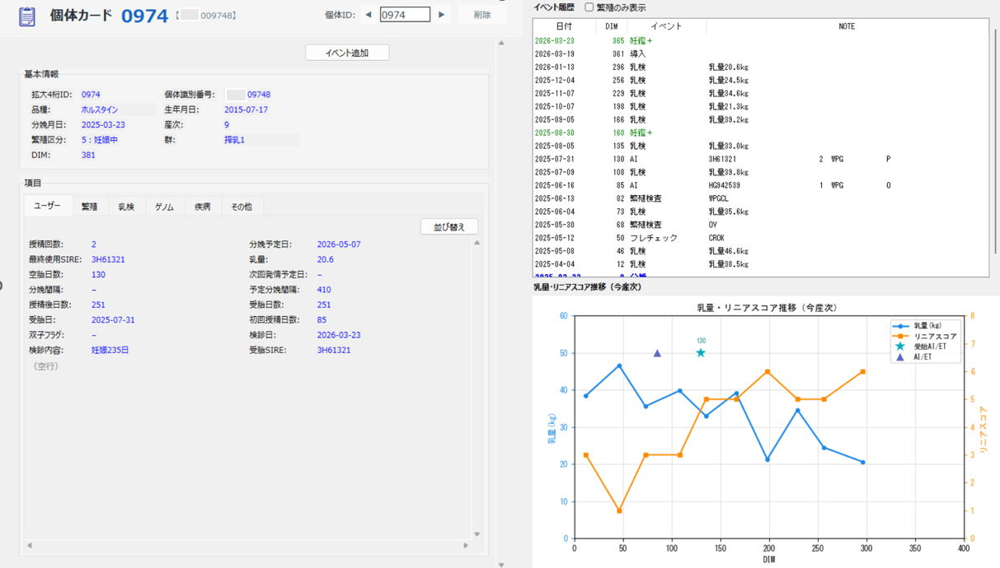
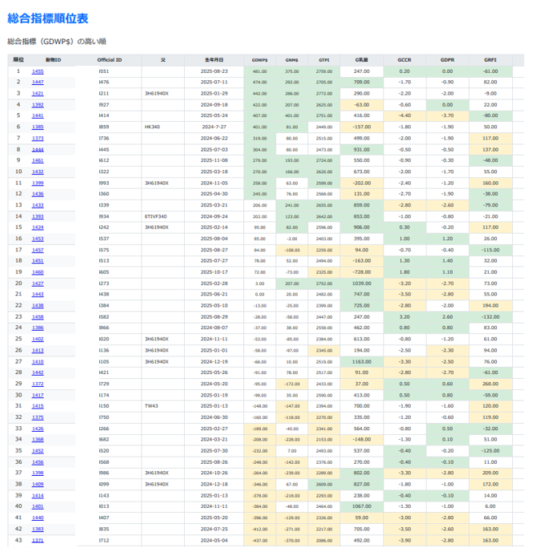
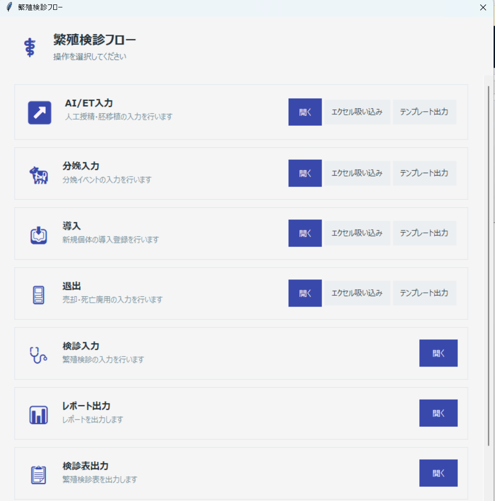
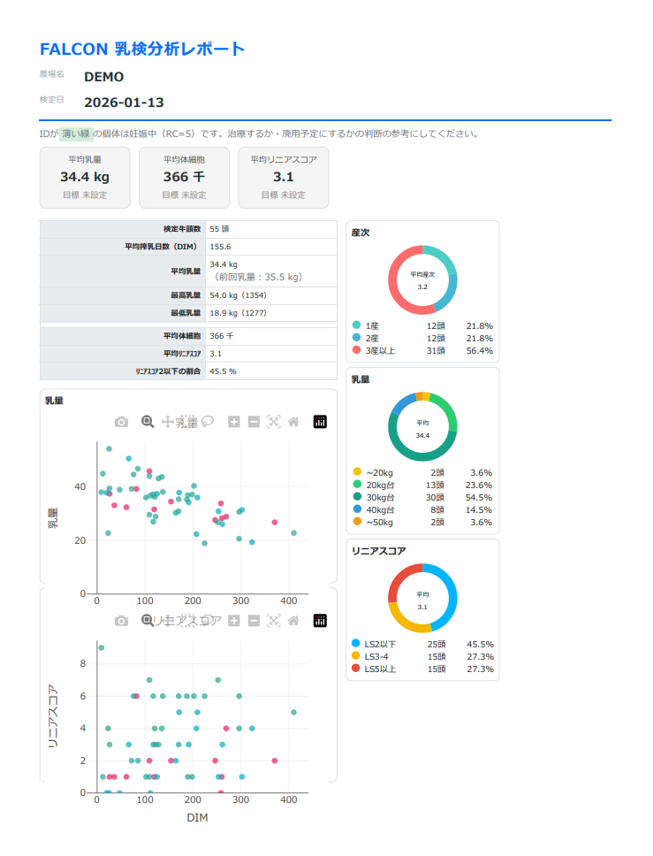
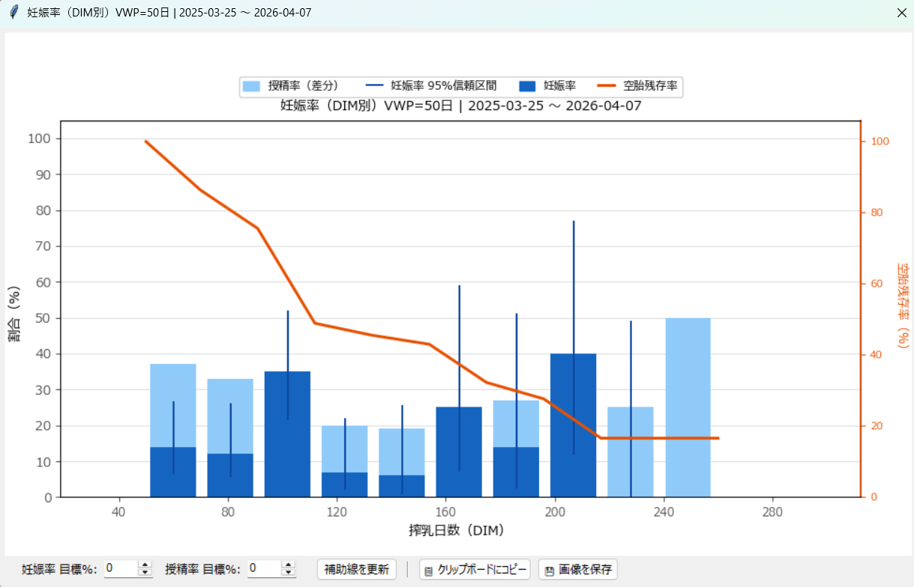

SCREEN 01 / 08
ダッシュボード
農場の状態を
農場の状態を
一画面で把握
経産牛頭数・21日妊娠率・平均受胎率・平均乳量などの主要KPIを自動集計。訪問前にこの画面を確認するだけで、その日の農場状況を把握できます。
- 繁殖・分娩・乳量を一画面に集約
- 長期空胎牛・分娩超過牛を自動ハイライト
- 農家への説明資料として活用可能
SCREEN 02 / 08
繁殖管理
21日妊娠率
21日妊娠率
サイクル別分析
世界標準のロジックで18サイクル分の妊娠率・授精率・受胎率を自動集計。問題のあるサイクルを視覚的に特定し、「いつから」「何が」悪化したかを即座に把握できます。
- DC305互換ロジックで正確な数値を算出
- サイクル別グラフで傾向を可視化
- 個体レベルの詳細もクリック一つで確認


SCREEN 03 / 08
繁殖検診
検診レポートを
検診レポートを
自動生成
累積妊娠頭数グラフ・繁殖指標一覧・ドーナツチャートを自動生成。農家への説明資料がそのまま出来上がります。定期検診の記録・追跡も一元管理。
- 検診ごとの妊娠率・受胎率・発情発見率を自動集計
- 累積グラフで成績トレンドを可視化
- 検診結果の入力からレポートまでワンストップ
SCREEN 04 / 08
個体管理
1頭ごとの全情報を
1頭ごとの全情報を
時系列で把握
繁殖・分娩・乳量・ゲノム情報を時系列で可視化。イベント履歴を即検索でき、診察・指導の根拠をその場で確認できます。乳量とリニアスコアの推移グラフも自動表示。
- 繁殖履歴・分娩履歴・乳検を一画面で確認
- AI・妊娠鑑定・繁殖検診を時系列表示
- 乳量・リニアスコア推移グラフを自動生成


SCREEN 05 / 08
ゲノム
ゲノム評価を
ゲノム評価を
農場管理に活かす
ゲノム評価レポートを取り込み、GDNPS総合指標で全個体を自動ランキング。後継牛候補の選定や廃用判断の根拠として活用できます。
- ゲノムデータをワンクリックで取り込み
- 総合指標・乳量・体型・繁殖性能を一覧比較
- 色分け表示で優良牛・要注目牛を即把握
SCREEN 06 / 08
繁殖検診
検診業務を
検診業務を
ワンストップで管理
AI/ET入力・分娩入力・導入・退出・検診入力・レポート出力まで、繁殖検診に関わるすべての操作をひとつのフロー画面に集約。手順に迷わず業務を進められます。
- AI/ET・妊娠鑑定をその場で入力
- エクセル一括取り込み・テンプレート出力に対応
- 検診結果からレポートまでシームレスに完結


SCREEN 07 / 08
乳質・乳量
乳検データを
乳検データを
多角的に分析
DHI乳検データを取り込み、平均乳量・体細胞数・リニアスコアを自動集計。乳量分布・リニアスコア分布をグラフで可視化し、牛群の乳質管理をサポートします。
- 平均乳量・体細胞・産次構成を一覧表示
- 乳量とリニアスコアの散布図を自動生成
- 妊娠中個体を色別ハイライトで識別
SCREEN 08 / 08
繁殖分析
サイクル別・DIM別の
サイクル別・DIM別の
詳細繁殖分析
妊娠率をサイクルごと、DIM（泌乳日数）ごとに集計してグラフ化。どのサイクル・DIM帯で成績が落ちているかを視覚的に把握できます。
- 妊娠率・授精率を95%信頼区間付きで表示
- 空胎残存率（オレンジ線）で群の空胎状況を把握
- サイクル別・DIM別・受胎率別など複数の切り口で分析可能
